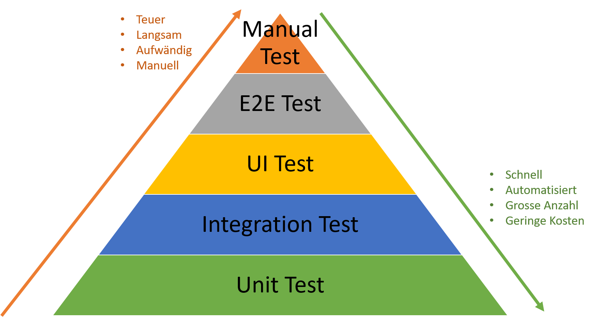
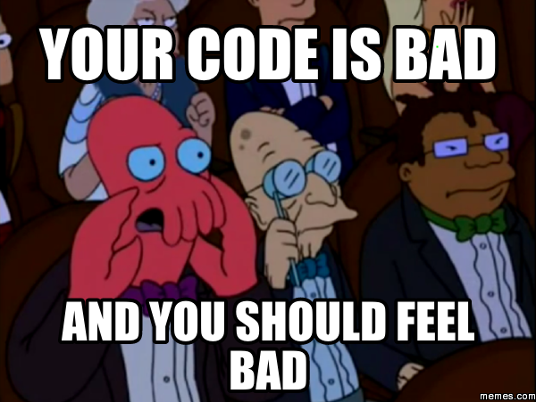
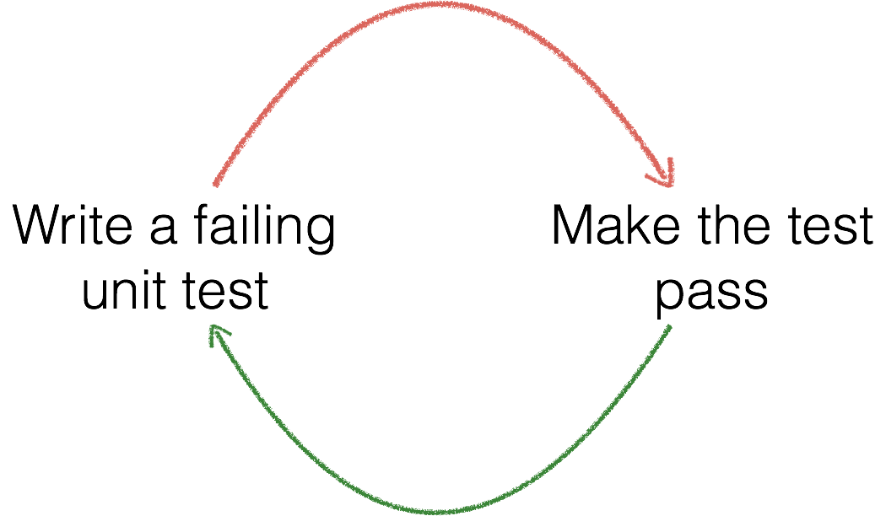
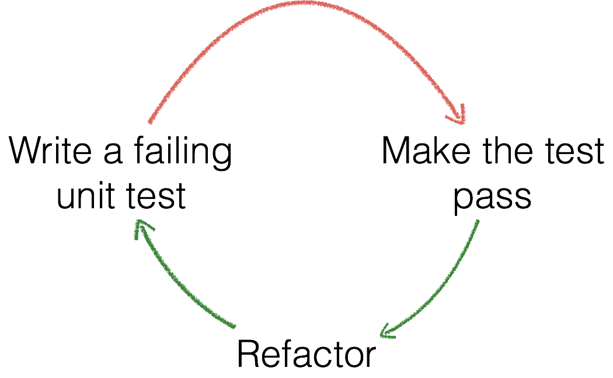

Über uns
Marius Reusch
Software Engineer @ Zühlke

Recap
- Automatisierung
- Pairing und Teamwork
- Tools im Griff haben
- Testing
- sich weiterentwickeln
Warum Testing? Warum Automatisierung?
- Was einmal lief soll nicht wieder kaputt gehen
- Testing ist Bestandteil professioneller Software Entwicklung
- Ein Feature läuft nur dann, wenn es getestet ist
- manuelles Ausführen von repetitiven Tägigkeiten ist...
L A N G W E I L I G
Testing spart Geld

Testing Pyramide
Testing Pyramide (Theorie)
- Integration Tests testen das Zusammenspiel mehrerer Teile und externer Ressourcen (z.B. Datenbank)
- UI Tests testen den View Layer, werden nicht mit dem realen Backend ausgeführt
- E2E Tests testen die Applikation vom UI bis zur Datenbank, in einem Benutzer-Flow
- Manual Tests werden von Testern oder Benutzern manuell durchgeführt
Unit Tests
- testen eine Unit of Work: eine Klasse, oder auch mehrere Klassen als Verbund
- sind sehr schnell und automatisch ausführbar - werden vor jedem Commit ausgeführt
- werden rein in memory ausgeführt, kein Zugriff auf Dateisystem oder Datenbank
- werden von den Entwicklern mit den gewohnten Tools (und einer Unit-Testing Library) geschrieben
JUnit
- JUnit ist ein Unit-Test Framework
- ursprünglich von Kent Beck und Erich Gamma entwickelt
- bietet eine API zum Annotieren von Tests: @Test
- bietet statische Methoden um die Ergebnisse mit den Erwartungen zu überprüfen: org.junit.Assert.*
- ist Open Source und kostenlos verfügbar: JUnit Projektseite
Ursprung
Kent Beck

Agile Movement
Was ist die grundlegende Vorgehensweise bei TDD?
Write tests first!
Aber ich habe doch noch gar keine Klassen oder Methoden oder sonst irgendwas. Arbeite ich mit diesen ganzen rot unterstrichenen Sachen in meiner IDE?

Und warum mache ich sowas?

Fast Feedback

No bad code
It's fun!
Vereinfachter TDD Cycle
Drei Möglichkeiten um "grün" zu werden
- Fake it
- Implementiere das Offensichtliche
- Triangulation
Beginne so simpel wie möglich!
- Schreibe keinen Code für Anforderungen, die irgendwann mal auftauchen könnten
- Löse dich davon, die Implementation vorauszuahnen
- In erster Linie geht es darum den Test grün zu bekommen (red / green cycle)
Auschecken und dummyTest ausführen
Maven Projekt Struktur
Industrieweiter Standard
- src/main/java => Source Dateien
- src/test/java => Test Dateien
- Name der Testklasse = Zu testende Klasse + "Test"
- StringBuilder => StringBuilderTest
Dependencies
- JUnit
- Mockito - Framework um Abhängigkeiten durch eine Mock Implementation zu ersetzen
Failure / Success / Error
- Grün bedeutet, dass die Testfälle funktionieren, keine unerwarteten Exceptions auftreten und alle Assertions den Erwartungen entsprechen
- Rot bedeutet, dass entweder eine unerwartete Exception aufgetreten ist (Error) oder eine Assertion nicht den Erwartungen entspricht (Failure)
@Test
- frühere Version: alle Methoden mussten mit test beginnen, die Testklasse musste TestCase erweitern
- seit JUnit4 werden Test-Methoden mit der @Test Annotation versehen, es muss nicht mehr von TestCase geerbt werden
- die mit @Test annotierten Methoden müssen public void sein
Assert
- überprüfen der Erwartungen
- ist eine Erwartung nicht korrekt, schlägt ein Test fehl
- Assert.assertEquals(expected, actual);
- Assert.assertEquals(message, expected, actual);
Ausführen von Tests
Tests können verschieden ausgeführt werden
- Alle pro Package
- Alle pro Klasse
- ein einzelner Test
Anforderungen
- Der Calculator soll die Möglichkeitn bieten den Durchschnitt einer beliebigen Anzahl (Notenspiegel) von gewichteten Noten zu berechnen.Das Gewicht der Noten wir durch ECTS repräsentiert.
- Des Weiteren soll der Calculator den Durchschnitt über eine Menge von Notenspiegeln berechnen können.
- Vorsicht dieser Anforderungskatalog ist nicht zwingend vollständig bzw. bis ins letzte Detail ausformuliert.
- Wichtig: TDD erfodert das selbständige Unterteilen von Anforderungen in kleine Häppchen
Test Case Brainstorming
Ein paar Hinweise
- Überprüft eure Vermutungen mit Assertions
- Überlege dir einen sinnvollen Namen für die Testmethode(n), starte mit möglichst einfachen Testfällen
@Test
public void sinnvollerName() throws Exception {
final Person person = new Person("Hans", "Muster");
final String fullname = person.getFullname();
Assert.assertEquals("Hans Muster", fullname);
}
Recap
- Hat jemand Lust seine Lösung vorzustellen?
- Wieviele Tests habt ihr geschrieben? Warum?
- Wieviele Assert Statements habt ihr in einer Testmethode? Warum?
- Für die nächste Runde überdenkt eure Namen erneut, und schaut ob ihr was ändern wollt.
Recap
- Exkurs: Naming Patterns für Testmethoden
- Wie sind Beispiele für eure Testnamen?
Exkurs: Naming Patterns für Testmethoden
Welches Naming findet ihr am sinnvollsten?
- testCalc1
- oneGrade_calculateAverage_returnsInputGrade
- calculateAverageOfOneGrade
- testAverageCalculationForOneGradeAndShouldReturnTheAverageOfThatGrade
- test_calculate_oneGrade
Exkurs: Naming Patterns und Strukturen für Testmethoden
- Roy Osherove
- methodUnderTest_inputParams_expectedResult
@Test
public void getFullName_firstLastName_fullName() {
final Person person = new Person("Hans", "Muster");
final String fullname = person.getFullname();
Assert.assertEquals("Hans Muster", fullname);
}
Vorteile eines Naming Patterns
- Tests der gleichen Unit sind aufgrund des Namens gruppiert
- ohne den Code zu sehen - es ist schnell klar welches Feature nicht mehr läuft
- Alle Team Mitglieder folgen einem Schema - neue Mitglieder finden sich schnell zurecht
Recap
- Was fällt euch an euren Implementation auf? Ist euer Code clean?

Exkurs: Erweiterung des TDD Cycles
Recap
- Arrange / Act / Assert
Exkurs: Test Coverage
Versuche die Berechnungslogik zu zerstören, ohne dass ein Test bricht.
Exkurs: Test Coverage
Es wird zwischen unterschiedlichen Kennzahlen unterschieden:
- Class Coverage
- Method Coverage
- Line / Statement Coverage
- Branch / Decision Coverage
Exkurs: Test Coverage
public class GradePrinter {
public boolean isPassed(double grade) {
return grade <= 4.0;
}
public void gradePrinter(double grade) {
if (grade <= 4.0) {
System.out.println("Passed!");
}
if (grade == 1.0) {
System.out.println("CRAZY!");
}
System.out.println("Your grade is " + grade);
}
}
Exkurs: Primitive Obsession
- Besessenheit von primitiven Typen
- Problem: Viele Kleine Duplikationen und geringe Typ-Sicherheit
- Lösung: Wrapper-Objekte für die primitiven Typen erstellen
Exkurs: Feature Envy
Exkurs: Feature Envy
- Feature Neid
- Problem Hohe Kopplung
- Feature Envy können auch auf Standard-Klassen wie String, Double, Integer, Collections etc. auftreten
- Lösung: Funktionalität an ein anderes, oder neues Objekt verschieben.
Exkurs: Feature Envy
public String convertToUsFormat(Grade grade){
String internationalGrade = "";
if (grade.getValue() >= 1.0 && grade.getValue() < 1.7) {
internationalGrade = "A";
} else if (grade.getValue() >= 1.7 && grade.getValue() < 2.7) {
internationalGrade = "B";
} else if (grade.getValue() >= 2.7 && grade.getValue() < 3.7) {
internationalGrade = "C";
} else if (grade.getValue() >= 3.7 && grade.getValue() <= 4.0) {
internationalGrade = "D";
} else if (grade.getValue() > 4) {
internationalGrade = "F";
}
return internationalGrade;
}
Recap TDD: Was muss ich testen?
- Schleifen
- Verzweigungen
- Operationen
- Polymorphismus
- "Write tests until fear is transformed into boredom" (Kent Beck)
Recap TDD: Wie erkenne ich schlechte Tests?
- Langer Setup Code
- Setup Duplication
- Langlaufende Tests
- Fragile Tests
Dependencies
- Abhängigkeiten sind die Hauptursache für schwer testbaren Code
- vor allem Abhängigkeiten, die von der zu testenden Klasse selbst erstellt werden
"Dependency Injection is a 25-dollar term for a 5-cent concept."
How does it work?

"Dependency injection means giving an object its instance variables. Really. That's it."
Constructor Injection
public class SomeClass {
private Dependency dependency;
public SomeClass(Dependency dependency) {
this.dependency = dependency;
}
}
Dependecy dependency = new Dependency();
SomeClass clazz = new SomeClass(dependency);
Setter Injection
public class SomeClass {
private Dependency dependency;
public void setDependency(Dependency dependency) {
this.dependency = dependency;
}
}
Dependecy dependency = new Dependency();
SomeClass clazz = new SomeClass();
clazz.setDependency(dependency);
Interface Injection
public class SomeClass implements DepInjectable{
private Dependency dependency;
@Override
public void injectDep(Dependency dependency) {
this.dependency = dependency;
}
}
interface DepInjectable {
void injectDep(Dependency dependency);
}
Dependecy dependency = new Dependency();
SomeClass clazz = new SomeClass();
clazz.setDependency(dependency);
JEE CDI & Spring DI
public class SomeClass {
@Inject
private Dependency dependency;
}
public class SomeClass {
private Dependency dependency;
@Autowired
public void setDependency(Dependency dependency) {
this.dependency = dependency;
}
}
Was genau hilft uns das beim Testing?
- Dependencies können im Test ausgetauscht werden
- Anstelle der echten Abhängigkeit, kann dem Object under Test eine Alternative untergejubelt werden
- Es gibt mehrere Formen solche Alternativen zu erstellen. Sie werden alle als Test Double bezeichnet
Dummy Object
public interface FileReader {
String read(File file);
}
@Test
public void importCustomerData() {
FileReader reader = new FileReader() {
@Override
public String read(File file) {
return null;
}
};
new CustomerImport(reader);
// ...
}
Dummy Object (2)
- ein möglichst einfaches Objekt als Parameter nutzen
- im einfachsten Fall null
- Wird ein Objekt benötigt, die simpelste Form der Implementierung des Interfaces wählen
- Dummies werden nicht aufgerufen, sie werden lediglich für eine vollständige Liste der Parameter benötigt
Fake
- bieten eine funktionierende Implementation
- decken nicht alles ab
- nicht für die Produktion nutzbar
- Bspw. eine In-Memory-Datenbank
Test Stub
@Test
public void calculateShippingTime_productInStore() {
ProductService prService = new ProductService() {
@Override
public boolean isProductInStore() {
return true;
}
};
int days = new ShippingService(prService)
.getShippingTime();
assertEquals(2, days);
}
Test Stub (2)
- ähnlich zum Dummy - wird aber aufgerufen
- es wird hart ein Wert zurückgegeben
- die reale Implemementation wird überschrieben
Test Spy
new EmailService() {
int callCount = 0;
String lastCallParam = null;
@Override
public void sendMail(String msg) {
this.callCount++;
this.lastCallParam = msg;
}
public int getCallCount() {
return this.callCount;
}
public String getLastCallParam() {
return this.lastCallParam;
}
};
Test Spy (2)
- ist ein Stub der zusätzliche Informationen über die Aufrufe bereitstellt
- er kann auch die reale Implementierung aufrufen super.call();
- die Anzahl der Aufrufe, ob eine Methode überhaupt aufgerufen wurde oder auch die Argumente können überprüft werden
Mock
Mockito
- ist in der Industrie am verbreitesten
- hat aus unserer Sicht die angenehmste API
- wir raten beim Einsatz eines Mocking-Frameworks für Java zu Mockito
Mocking mit Mockito
@Test
public void email_withMockito() throws Exception {
EmailService emailServiceMock = Mockito
.mock(EmailService.class);
Mockito.when(emailServiceMock.sendMail("Text"))
.thenReturn("Antwort");
String resp = emailServiceMock.sendMail("Text");
Assert.assertEquals("Antwort", resp);
Mockito.verify(emailServiceMock, Mockito.times(1))
.sendMail("Text");
}
Mocking allgemein
- Mocking sollte nur sehr dosiert eingesetzt werden
- Tests mit Mock-Unterstützung sind langsamer
- Die Lesbarkeit kann schnell leiden
- Objekte die einfach zu erstellen und zu kontrollieren sind sollten nicht gemocked werden
- Mocking bietet sich vor allem für Abhängigkeiten an, die auf das Dateisystem, die Datenbank oder andere Systeme zugreifen